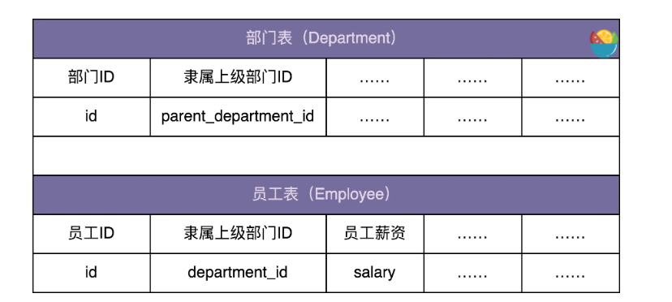

Composite Design Pattern:Compose objects into tree structure to represent part-whole hierarchies.Composite lets client treat individual objects and compositions of objects uniformly.
组合模式，与其说是一种设计模式，倒不如说是对业务场景的一种数据结构和算法的抽象。其中，数据可以表示成树这种数据结构，业务需求可以通过在树上的递归遍历算法来实现。 组合模式，将一组对象组织成树形结构，将单个对象和组合对象都看做树中的节点，以统一处理逻辑，并且它利用树形结构的特点，递归地处理每个子树，简化代码实现。 使用组合模式的前提在于，你的业务场景必须能够表示成树形结构。所以，组合模式的应用场景也比较局限，它并不是一种很常用的设计模式。
实例一
假设我们有这样一个需求：设计一个类来表示文件系统中的目录，能方便地实现下面这些功能：
- 动态地添加、删除某个目录下的子目录或文件；
- 统计指定目录下的文件个数；
- 统计指定目录下的文件总大小。
一个简单的实现如下，文件和目录统一用 FileSystemNode 类来表示，并且通过 isFile 属性来区分，对于目录下文件个数和文件总大小的计算，使用树上的递归遍历算法实现。对于文件，我们直接返回文件的个数（返回 1）或大小。对于目录，我们遍历目录中每个子目录或者文件，递归计算它们的个数或大小，然后求和，就是这个目录下的文件个数和文件大小。
#include <string>
#include <list>
#include <filesystem>
#include <iostream>
#include <memory>
using std::string;
using std::list;
using std::shared_ptr;
namespace fs = std::filesystem;
class FileSystemNode {
public:
FileSystemNode(string _path, bool _isFile):path(_path),isFile(_isFile) {}
int countNumOfFiles() const {
if(isFile){
return 1;
}
int numOfFile=0;
for(auto & fileOrDir : subNodes){
numOfFile+=fileOrDir->countNumOfFiles();
}
return numOfFile;
}
long countSizeOfFiles() const {
if(isFile){
if(!fs::exists(path))
return 0;
return fs::file_size(path);
}
long sizeOfFiles =0;
for(auto & fileOrDir: subNodes){
sizeOfFiles+=fileOrDir->countSizeOfFiles();
}
return sizeOfFiles;
}
string getPath() const {
return path;
}
void addSubNode(shared_ptr<FileSystemNode> fileOrDir) {
subNodes.push_back(fileOrDir);
}
void removeSubNode(shared_ptr<FileSystemNode> fileOrDir) {
for(auto it = subNodes.begin();it!=subNodes.end();it++){
if(it->get()==fileOrDir.get()){
subNodes.erase(it);
break;
}
}
}
private:
string path;
bool isFile;
list<shared_ptr<FileSystemNode>> subNodes;
};
int main(){
/**
* /
* /wz/
* /wz/a.txt
* /wz/b.txt
* /wz/movies/
* /xzg/
*/
shared_ptr<FileSystemNode> fileSystemTree = std::make_shared<FileSystemNode>("/",false);
shared_ptr<FileSystemNode> node_wz = std::make_shared<FileSystemNode>("/wz/",false);
shared_ptr<FileSystemNode> node_xzg = std::make_shared<FileSystemNode>("/xzg/",false);
fileSystemTree->addSubNode(node_wz);
fileSystemTree->addSubNode(node_xzg);
shared_ptr<FileSystemNode> node_wz_a = std::make_shared<FileSystemNode>("/wz/a.txt",true);
shared_ptr<FileSystemNode> node_wz_b = std::make_shared<FileSystemNode>("/wz/b.txt",true);
shared_ptr<FileSystemNode> node_wz_movies = std::make_shared<FileSystemNode>("/wz/movies/",false);
node_wz->addSubNode(node_wz_a);
node_wz->addSubNode(node_wz_b);
node_wz->addSubNode(node_wz_movies);
std::cout<<"/ files num:"<<fileSystemTree->countNumOfFiles()<<std::endl;
std::cout<<"/wz/ files num:"<<node_wz->countNumOfFiles()<<std::endl;
node_wz->removeSubNode(node_wz_a);
std::cout<<"/ files num:"<<fileSystemTree->countNumOfFiles()<<std::endl;
}
单纯从功能实现角度来说，上面的代码没有问题，已经实现了我们想要的功能。但是，如果我们开发的是一个大型系统，从扩展性（文件或目录可能会对应不同的操作）、业务建模（文件和目录从业务上是两个概念）、代码的可读性（文件和目录区分对待更加符合人们对业务的认知）的角度来说，我们最好对文件和目录进行区分设计，定义为 File 和 Directory 两个类。按照这个设计思路，我们对代码进行重构。重构之后的代码如下所示：
#include <string>
#include <list>
#include <filesystem>
#include <iostream>
#include <memory>
using std::string;
using std::list;
using std::shared_ptr;
namespace fs = std::filesystem;
class FileSystemNode {
public:
FileSystemNode(string _path):path(_path){}
virtual ~FileSystemNode(){}
virtual int countNumOfFiles()=0;
virtual long countSizeOfFiles()=0;
string getPath()const{return path;}
protected:
string path;
};
class File : public FileSystemNode {
public:
File(string path):FileSystemNode(path){}
int countNumOfFiles() {
return 1;
}
long countSizeOfFiles() {
return fs::exists(path) ? fs::file_size(path):0;
}
};
class Directory : public FileSystemNode {
public:
Directory(string path):FileSystemNode(path){}
int countNumOfFiles() {
int numOfFiles = 0;
for (auto& fileOrDir : subNodes) {
numOfFiles += fileOrDir->countNumOfFiles();
}
return numOfFiles;
}
long countSizeOfFiles() {
long sizeofFiles = 0;
for (auto& fileOrDir : subNodes) {
sizeofFiles += fileOrDir->countSizeOfFiles();
}
return sizeofFiles;
}
void addSubNode(shared_ptr<FileSystemNode> fileOrDir) {
subNodes.push_back(fileOrDir);
}
void removeSubNode(shared_ptr<FileSystemNode> fileOrDir) {
for(auto it = subNodes.begin();it!=subNodes.end();it++){
if(it->get()==fileOrDir.get()){
subNodes.erase(it);
break;
}
}
}
private:
list<shared_ptr<FileSystemNode>> subNodes;
};
int main(){
/**
* /
* /wz/
* /wz/a.txt
* /wz/b.txt
* /wz/movies/
* /wz/movies/c.avi
* /xzg/
* /xzg/docs/
* /xzg/docs/d.txt
*/
shared_ptr<Directory> fileSystemTree = std::make_shared<Directory>("/");
shared_ptr<Directory> node_wz = std::make_shared<Directory>("/wz/");
shared_ptr<Directory> node_xzg = std::make_shared<Directory>("/xzg/");
fileSystemTree->addSubNode(node_wz);
fileSystemTree->addSubNode(node_xzg);
shared_ptr<File> node_wz_a = std::make_shared<File>("/wz/a.txt");
shared_ptr<File> node_wz_b = std::make_shared<File>("/wz/b.txt");
shared_ptr<Directory> node_wz_movies = std::make_shared<Directory>("/wz/movies/");
node_wz->addSubNode(node_wz_a);
node_wz->addSubNode(node_wz_b);
node_wz->addSubNode(node_wz_movies);
shared_ptr<File> node_wz_movies_c = std::make_shared<File>("/wz/movies/c.avi");
node_wz_movies->addSubNode(node_wz_movies_c);
shared_ptr<Directory> node_xzg_docs = std::make_shared<Directory>("/xzg/docs/");
node_xzg->addSubNode(node_xzg_docs);
shared_ptr<File> node_xzg_docs_d = std::make_shared<File>("/xzg/docs/d.txt");
node_xzg_docs->addSubNode(node_xzg_docs_d);
std::cout<<"/ files num:"<<fileSystemTree->countNumOfFiles()<<std::endl;
std::cout<<"/wz/ files num:"<<node_wz->countNumOfFiles()<<std::endl;
}
我们对照着这个例子，再重新看一下组合模式的定义：“将一组对象（文件和目录）组织成树形结构，以表示一种‘部分 - 整体’的层次结构（目录与子目录的嵌套结构）。组合模式让客户端可以统一单个对象（文件）和组合对象（目录）的处理逻辑（递归遍历）。
实例二
假设我们在开发一个 OA 系统（办公自动化系统）。公司的组织结构包含部门和员工两种数据类型。其中，部门又可以包含子部门和员工。在数据库中的表结构如下所示：

我们希望在内存中构建整个公司的人员架构图（部门、子部门、员工的隶属关系），并且提供接口计算出部门的薪资成本（隶属于这个部门的所有员工的薪资和）。#include <memory>
#include <list>
using std::shared_ptr;
using std::list;
class HumanResource {
public:
HumanResource(long _id):id(_id){}
virtual ~HumanResource(){}
long getId()const{return id;}
virtual double calculateSalary()const =0;
protected:
long id;
};
class Employee : public HumanResource{
public:
Employee(long _id, double _salary):HumanResource(id),salary(_salary){}
double calculateSalary()const { return salary;}
private:
double salary;
};
class Department : public HumanResource{
public:
Department(long _id):HumanResource(id){}
double calculateSalary()const{
double totalSalary = 0;
for (auto& hr : subNodes) {
totalSalary += hr->calculateSalary();
}
return totalSalary;
}
void addSubNode(shared_ptr<HumanResource> node){
subNodes.push_back(node);
}
private:
list<shared_ptr<HumanResource>> subNodes;
};
class DepartmentRepo{
public:
//根据部门id获取所有的子部门id
list<long> getSubDepartmentIds(long id);
};
class EmployeeRepo{
public:
//根据部门id获取所有隶属于该部门的员工
list<long> getDepartmentEmployeeIds(long id);
//根据员工id获取薪水
double getEmployeeSalary(long id);
};
// 构建组织架构的代码
class Demo {
public:
//...
void buildOrganization() {
shared_ptr<Department> rootDepartment = std::make_shared<Department>(ORGANIZATION_ROOT_ID);
buildOrganization(rootDepartment);
}
private:
void buildOrganization(shared_ptr<Department> department) {
list<long> subDepartmentIds = departmentRepo->getSubDepartmentIds(department->getId());
for (long subDepartmentId : subDepartmentIds) {
shared_ptr<Department> subDepartment = std::make_shared<Department>(subDepartmentId);
department->addSubNode(subDepartment);
buildOrganization(subDepartment);
}
list<long> employeeIds = employeeRepo->getDepartmentEmployeeIds(department->getId());
for (auto employeeId : employeeIds) {
double salary = employeeRepo->getEmployeeSalary(employeeId);
department->addSubNode(std::make_shared<Employee>(employeeId,salary));
}
}
private:
const static long ORGANIZATION_ROOT_ID = 1001;
shared_ptr<DepartmentRepo> departmentRepo; // 依赖注入
shared_ptr<EmployeeRepo> employeeRepo; // 依赖注入
};
我们再拿组合模式的定义跟这个例子对照一下：“将一组对象（员工和部门）组织成树形结构，以表示一种‘部分 - 整体’的层次结构（部门与子部门的嵌套结构）。组合模式让客户端可以统一单个对象（员工）和组合对象（部门）的处理逻辑（递归遍历）。”